JavaWeb架構、Servlet頁面轉發
尚硅谷JavaWeb筆記-04
JavaWeb的實現
一個web程式分成用戶端(瀏覽器)B與服務端S，搭建代碼實現彼此的請求溝通，要上線一個網站簡單可分成3大步驟
- 架構:就是寫程式碼，決定用戶端發送怎樣的請求，服務端如何處理、業務邏輯，回應
- 打包:包成war
- 部屬:使用web容器(例如tomcat)執行war包，在瀏覽器中訪問指定的網址
MVC架構
MVC是一種設計模式，目的是讓HTML代碼和業務邏輯代碼分開
- Model模型，處理應用程式中資料與業務邏輯部分，就是跟資料庫打交道
- View檢視，資料顯示部分，給人看的
- Controller控制，負責從檢視中讀取資料並向模型傳送資料等。看前台(View)點了啥菜，叫廚房(Model)料理然後擺盤送餐
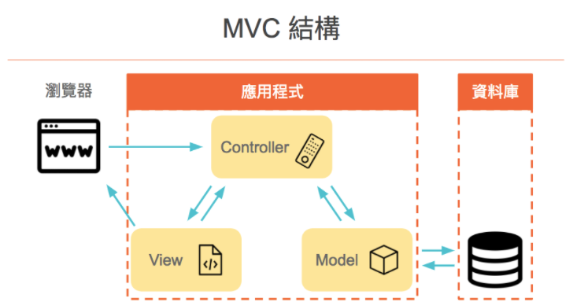
套用到Java中
- 用戶端發送請求
- 服務端的servlet或controller接收請求（路由規則由後端制定，整個專案開發的權重大部分在後端）
- 調用service、dao代碼完成業務邏輯
- 返回jsp
- jsp展現一些動態的代碼
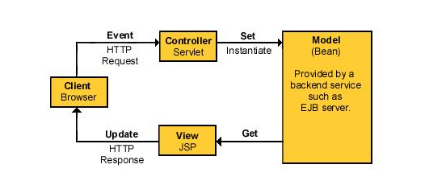
- java中的MVC =
JavaBean + JSP + Servlet - MVC是一個分類的方法，一種設計模式；而實作WEB專案中我們的路徑劃分、包的管理通常是使用三層架構
三層架構
基於業務邏輯來分層
表現層(Presentation Layer)
User Show Layer，USL、Client Application，用戶層、UI層
- 表現層前台:
- 介面顯示、與用戶互動
- JSP、JS、HTML…Web前端技術(通常位於WebContent資料夾)
- 表現層後台(也有人稱為控制層，但嚴格意義上不能這樣說):
- 用於控制頁面跳轉、調用業務邏輯層
- Servlet、SpringMVC的Controller、Struts2…(xxx.servlet包中)
業務邏輯層(Business Logic Layer)
簡稱BLL或Application Server，AP層、應用層、manage
- 承上啟下，完成業務邏輯、事務的操作也是在這
- 工程路徑、包名例如:
- com.xxx.yyy.service:service層接口
- com.xxx.yyy.service.impl:service層實現
資料訪問層(Data Access Layer)
簡稱DAL、Persistence持久層
-
負責跟資料庫打交道，增刪改查
-
可能加入ORM(Object Relational Mapping，物件關聯對映)方便操作
-
工程路徑、包名例如:
- com.xxx.yyy.dao:dao接口
- com.xxx.yyy.dao.impl:dao實現類
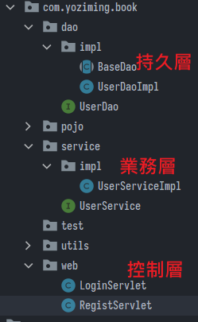
如何理解MVC與三層架構
- 兩者都是為了高內聚、低耦合
- MVC是基於頁面(專門把給人看的東西切成View)將代碼拆解，三層架構是基於業務邏輯分層
- 這裡學習了Servlet和Jsp，就是為了解決靜態頁面的問題，能夠實現動態的頁面，使維護開發更加的方便，但是也有缺點，在Servlet嵌入HTML代碼實在是太麻煩了，每次都要out.println();輸出。所以就有了Jsp，JSP中的內容就是html，為的就是方便寫html寫動態頁面
- 本質上JSP也是一個servlet，所以也會不可避免的要寫一些java代碼，也就是腳本，為了不讓其那麼混亂，就增加了標籤，EL運算式來儘量代替腳本。但是在寫一些項目時，還是會很麻煩，原因是業務邏輯代碼，與資料庫交互的代碼，HTML代碼這些類別，風格，作用完全不同的都混雜在了一起，造成的結果是代碼的維護性，可讀性以及擴張性都非常差，比如要改一個需求，那麼必須要把全部代碼都看完，不然你可能會因為修改了一處代碼，導致別的地方多處錯誤
- 到了Spring的年代時，把表現層的幕後處理請求和頁面獨立出來，形成了Controller和View，把業務邏輯層以及持久層、實體類(JavaBean)整合成一個Model。Controller就只處理請求資料，View就只處理頁面
- 常見框架比如Struts、Hibernate、Spring、會發現Struts是處理表現層的一個框架，而Hibernate是在dao層的一個框架，spring就是service層了
- 再後來就有了結合兩種開發模式，Controller只處理簡單請求，Service只處理業務邏輯，Dao只處理資料庫訪問資料，View只處理頁面，Model只處理實體類
- 小結:硬要連連看的話
- Model=業務邏輯層+資料訪問層，JavaBean與service
- View=表現層的前台部分，html、Jsp等給人看的東西
- Controller=表現層的後台部分，Servlet
- 但與其這樣硬分，不如說三層架構是為了JavaEE專案中路徑與各種包的分類，MVC是為了前後端的分離，他們負責的方向是不同的，實際開發中我們2種分類都會用到
web資源的部分
- 在專案中指定
web.xml與根目錄位置:
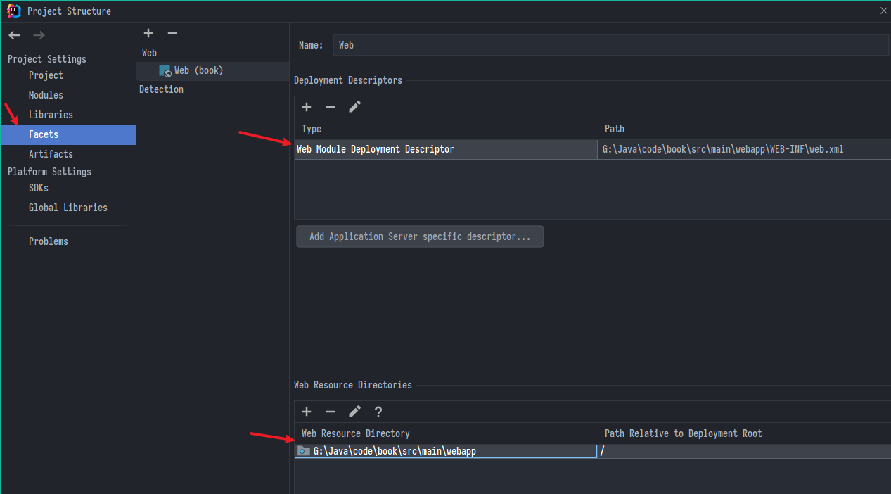
web.xml:部屬描述檔(Deployment Descriptor，簡稱DD)，負責綁定url網址與Servlet- Container由此得知如何去執行servlet及JSP
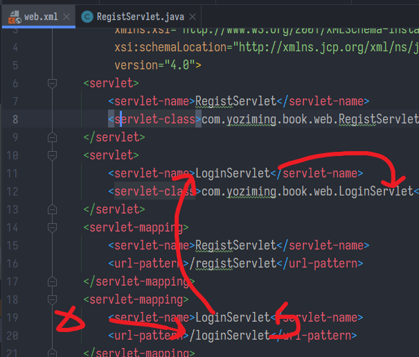
- 如果同時在DD裡面有設定，又在servlet宣告，則container會根據DD > WebServlet 的順序去執行
- 如果不要讓container去抓WebServlet的值，可以在
web.xml設定增加以下設定，metadata-complete="true" - DD除了將URL導到實際的servlet，還有其他的功用:
- 權限管理
- 錯誤頁面設定(erroe page)
- 標籤程式庫(JSTL)
- 初始組態設定，主要即供一種用宣告的方式，去客製web程式
- 其他網頁資源的部分參考:
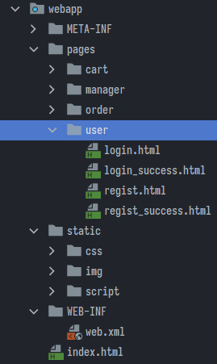
打包Artifacts
- 用工具(例如maven)將以上這些前後端、第三方引用等等…包成一個war包，準備部屬
- war exploded是工程模式，將當於把當前資料夾的位置關係直接做一份副本移到容器中，支援熱部屬，開發中通常用這種
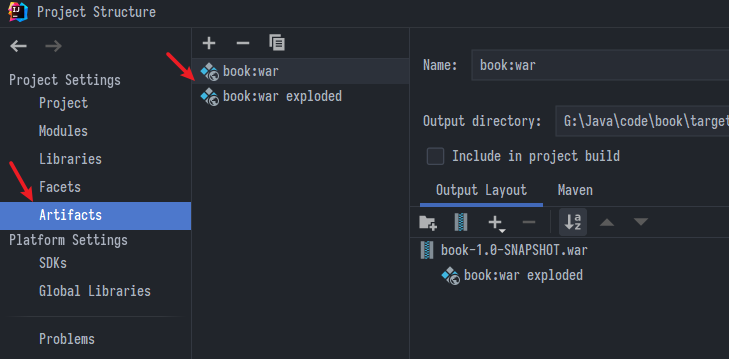
部署Deploy
- 將war包放到web容器，例如:tomcat/jboss/weblogic/websphere/jetty/resin中執行
- IDEA預設會把war exploded也寫進去，記得改好對應的網址，Deployment分頁中下方也要設定
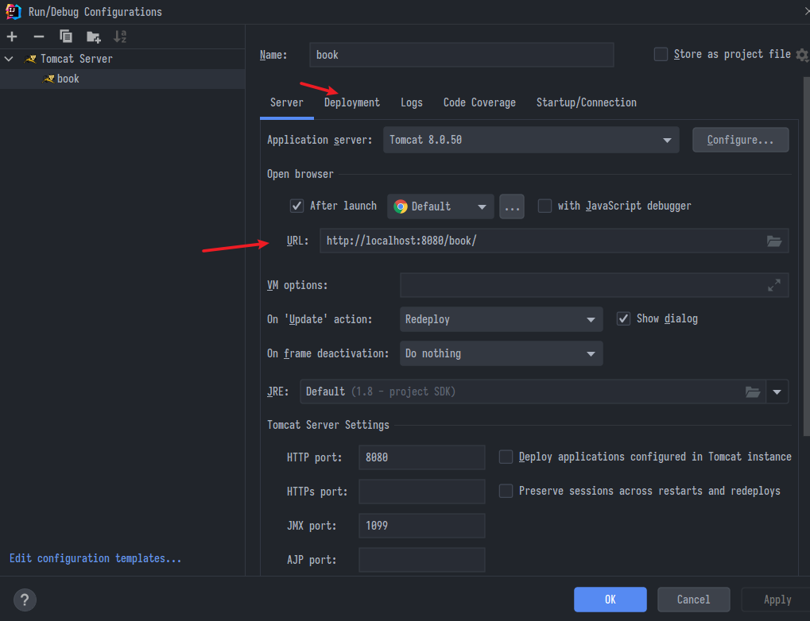
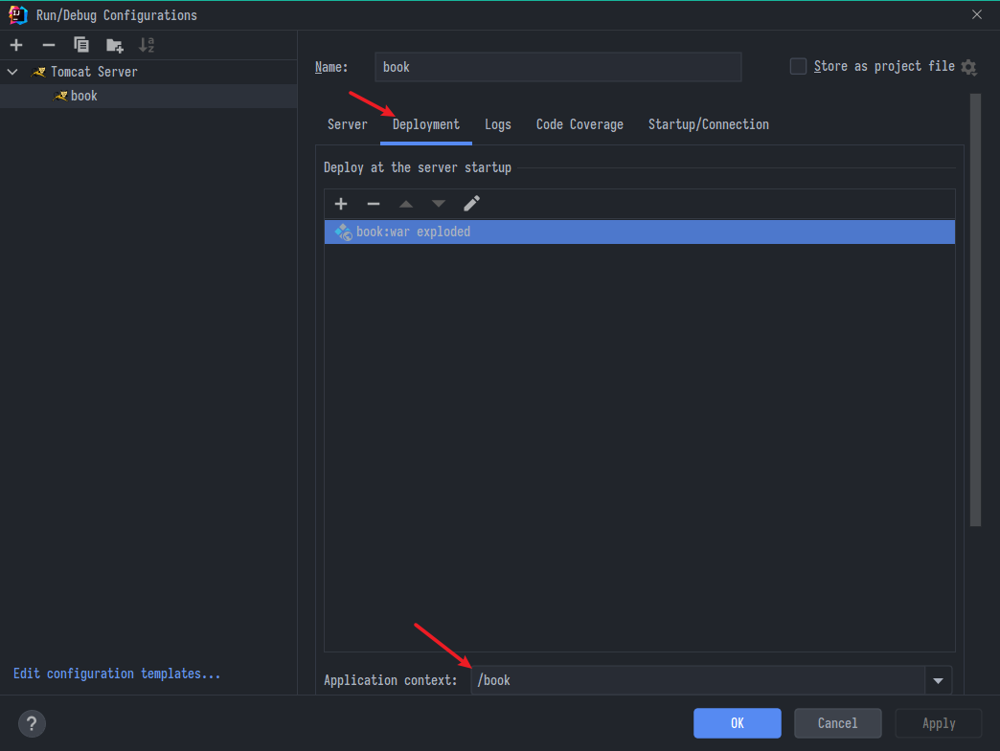
書城項目前期階段
紀錄一些踩的坑，有些地方很粗陋且是暫時的不用太認真，後面會再改進
IDEA2021建立web專案
- 選JavaEE，模板那邊可以點開下拉選單
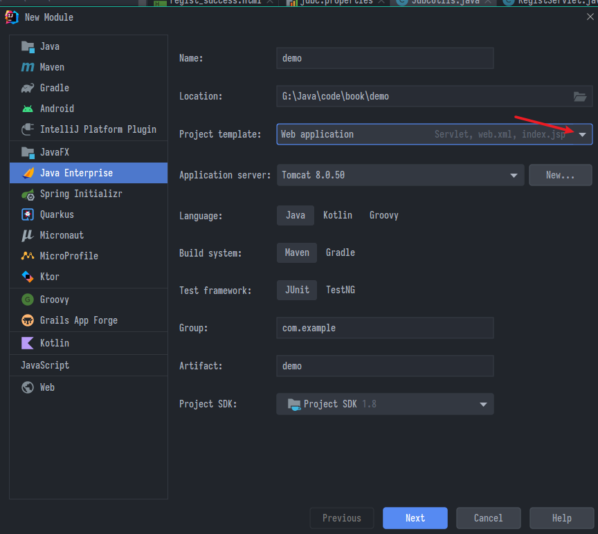
- 或對現有的模組按滑鼠右鍵、加入框架
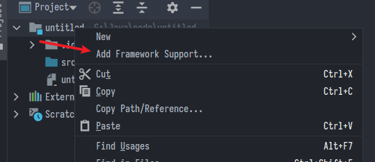
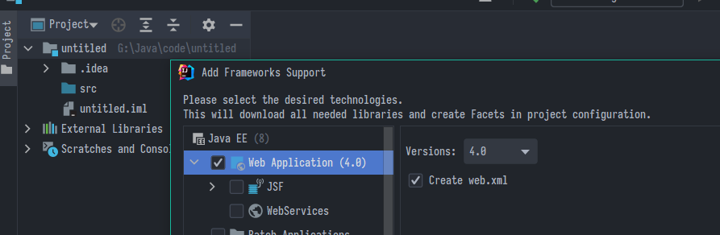
讀不到.properties
- 讀取用類加載器
xxx.class.getClassLoader()
properties.load(JdbcUtils.class.getClassLoader().getResourceAsStream("jdbc.properties"));
- .properties檔放到專案路徑resources之下
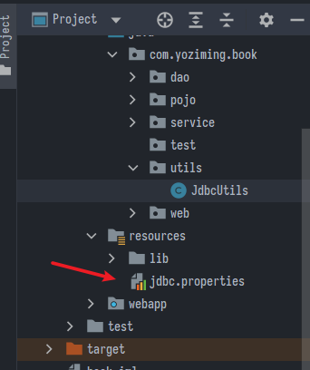
HTTP Status 500
- servlet無法初始化，先檢查是否存在拼寫錯誤
- 還有一個原因是外部導入的包dbutils跟德魯伊部屬前打包的時候沒包進去，錯誤提示如下:
Error instantiating servlet class com.yoziming.book.web.RegistServlet
java.lang.NoClassDefFoundError: org/apache/commons/dbutils/ResultSetHandler
暫時解法
- 進到專案結構(F4)
- 進Artifacts頁面，檢查展開的部屬結構，右邊可能有元素沒包進去，滑鼠點兩下他就會移過去了
- 這只是暫時的，每次重開專案都會跑掉，正確應該適用maven管理依賴，但是沒學過到搞清楚maven怎運作又要很花多時間，先頂著用吧
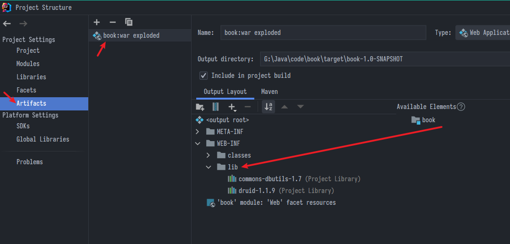
Servlet頁面轉發
forward(request, response)
就像客戶找你，你交給你同事處理(對客戶來說只有打一通電話)
- 屬於server side呼叫
- 定義在RequestDispatcher的介面，由request.getRequestDispatcher呼叫
- 內部轉址，URL不會顯示程式名稱(可設定成參數)
- 因為是同一個request內部轉址，可透過
request.setAttribute("參數名",值)傳遞參數- 轉走後再用
request.getAttribute("參數名")取出值
- 轉走後再用
- 效率較高
- 適用於權限管理轉頁時使用
protected void doPost(HttpServletRequest request, HttpServletResponse response) throws ServletException, IOException {
request.setAttribute("myname",name); // 傳遞參數
request.getRequestDispatcher("Index.jsp").forward(request, response);
return;
}
sendRedirect()
就像客戶打給你，你叫客戶去找其他的廠商(所以客戶還要再打一通電話)
- 屬於server side呼叫
- 定義在HttpServletResponse
- 直接外部呼叫另一支程式，會顯程式名稱
- 定義在HttpServletResponse
- 效率較低(因為cilent會在request一次)
- 適用於跳至外部網站或回主畫面使用
protected void doPost(HttpServletRequest request, HttpServletResponse response) throws ServletException, IOException {
response.sendRedirect("Index.jsp");
}
// 這邊若相對路徑加了斜線Container會自動抓到root目錄
上次修改於 2022-01-04